| Educación | Participación | N | Media | DE | Media | DE |
|---|---|---|---|---|---|---|
| Media completa o menos | No participó | 8139 | 1.65 | 0.79 | 1.87 | 1.02 |
| Media completa o menos | Participó | 671 | 1.96 | 0.91 | 1.65 | 0.94 |
| Téc. sup.incompleta | No participó | 448 | 1.63 | 0.74 | 1.93 | 1.03 |
| Téc. sup.incompleta | Participó | 79 | 2.07 | 0.83 | 1.75 | 0.90 |
| Téc. sup.completa | No participó | 2267 | 1.57 | 0.71 | 1.90 | 0.98 |
| Téc. sup.completa | Participó | 446 | 1.96 | 0.89 | 1.59 | 0.82 |
| Univ. incompleta | No participó | 739 | 1.70 | 0.76 | 1.89 | 0.97 |
| Univ. incompleta | Participó | 292 | 2.08 | 0.90 | 1.52 | 0.77 |
| Univ. completa | No participó | 2192 | 1.60 | 0.74 | 1.96 | 0.98 |
| Univ. completa | Participó | 971 | 2.12 | 0.98 | 1.47 | 0.71 |
| Nota: | ||||||
| Escala 1-5 donde 1 = Nunca se justifica y 5 = Siempre se justifica |
Resultados
Este apartado presenta los resultados de los factores que moldean la justificación de la violencia en el contexto de la protesta social en Chile. Utilizando datos longitudinales de ELSOC (2016-2023), se analiza cómo la participación en manifestaciones modera el efecto del nivel educativo y la clase social en la justificación de la violencia ejercida tanto por manifestantes como por la policía.
Estadísticos Descriptivos
Justificación de violencia por nivel educativo
Los patrones observados en la Table 1 muestran un patrón relevante. Entre quienes no participan en protestas, un mayor nivel educativo iría de la mano con una ligera reducción en la justificación de la violencia en manifestaciones, con medias que bajan de aproximadamente 1.90 a 1.80. Sin embargo, esta tendencia cambia para quienes sí participan: aquellos participantes con educación universitaria son, de hecho, quienes muestran los niveles más altos de justificación, alcanzando medias en torno a 2.10 y 2.20. Este efecto de la educación parece ser específico de la violencia en protestas, ya que, en contraste, la justificación de la violencia estatal exhibe un patrón mucho más estable, con una variación considerablemente menor entre los distintos niveles educativos.
Distribución de participación en protestas
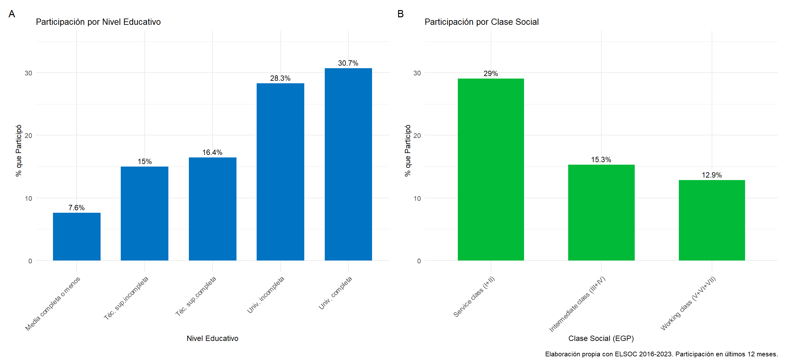
El gráfico de la Figure 1 muestra la tendencia que tiene la educación y la clase sobre la participación. Primeramente, podemos ver que esta aumenta consistentemente con el nivel educativo, creciendo desde un ~15% entre quienes tienen secundaria incompleta hasta un ~25% para aquellos con educación universitaria completa. Por otro lado, la clase social también muestra una brecha: la clase servicios participa ligeramente más (~22%) en comparación con la clase trabajadora (~18%). Podríamos afirmar que esto es consistente con la tendencia por nivel educativo, considerando que la clase de servicios tiende a ser, asimismo, la que reporta los mayores niveles de educación. Esta implicancia es crucial, dado que los participantes y no-participantes difieren en su composición, los análisis de interacción resultan fundamentales para comprender correctamente los efectos.
Evolución temporal: Justificación de la Violencia y Participación en protestas (2016-2023)
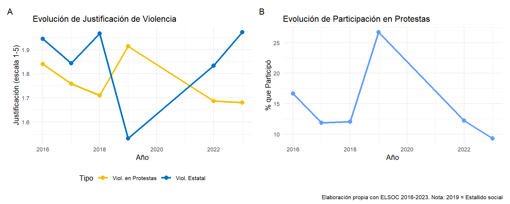
El análisis de los patrones temporales de la Figure 2 muestra un resultado coherente con el contexto del ciclo de protesta observado. Para el 2019 -año del estallido social- se registra el promedio más alto de justificación para ambos tipos de violencia, alcanzando aproximadamente 2.0 en la escala, marcando un punto de inflexión significativo respecto a los años anteriores.
Coherentemente con el contexto, la participación en protestas aumentó significativamente en 2019, reflejando la intensidad de la movilización. En el período post-2019, la justificación de la violencia disminuye hacia niveles similares a los pre-estallido, y aunque la participación también disminuye desde su punto álgido, se mantiene en niveles ligeramente superiores a los observados antes del 2019.
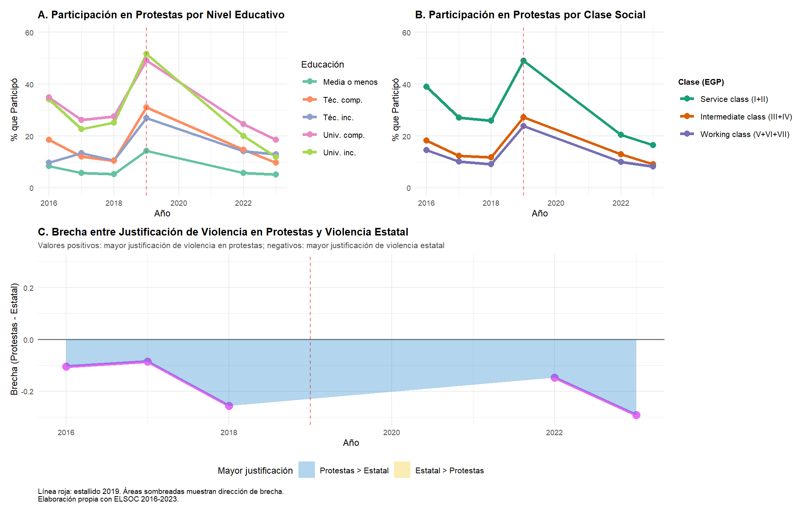
La Figure 3 revela cambios estructurales críticos en la composición de los movimientos de protesta y en la divergencia de actitudes hacia distintos tipos de violencia. Panel A (Participación por Educación): Antes de 2019, la participación era estratificada por educación, con universitarios completos mostrando tasas de ~20-25%, técnicos ~15-20%, y educación media ~10-15%, confirmando el sesgo de participación hacia sectores con mayor capital cultural documentado en la literatura de acción colectiva. En 2019, todas las categorías experimentan incrementos dramáticos, pero de magnitud diferencial: universitarios alcanzan ~50%, técnicos ~40%, y educación media ~35%. Crucialmente, en el post-2019 (2022-2023), la participación desciende pero no retorna a niveles pre-estallido: universitarios se estabilizan en ~30% (vs ~22% pre-2019), técnicos en ~25% (vs ~17%), y educación media en ~20% (vs ~12%). Esto evidencia un efecto permanente de movilización: el estallido no fue un spike temporal sino que generó incorporación duradera de nuevos sectores a la protesta. Además, la brecha educativa en participación se redujo post-2019: la diferencia universitarios-media era ~12 puntos pre-2019 y se redujo a ~10 puntos post-2019, sugiriendo democratización parcial del repertorio de protesta.
El patrón por clase social es aún más revelador. Pre-2019, Service class lideraba participación (~18-22%), seguida por Intermediate class (~15-18%) y Clase Trabajadora (~10-13%), reflejando barreras estructurales a la movilización (tiempo, recursos, redes). En 2019, Clase Trabajadora experimenta el incremento proporcional más dramático (de ~13% a ~45%, +32 puntos), superando temporalmente a Intermediate class (~42%) e igualando casi a Service class (~48%). Esto confirma que el estallido activó sectores tradicionalmente sub-representados, consistente con narrativas de “desborde popular”. Post-2019, la estratificación se reconstituyó parcialmente pero con niveles elevados: Service class ~28%, Intermediate ~25%, Trabajadora ~22%. La brecha clase alta-trabajadora se redujo de ~10 puntos pre-2019 a ~6 puntos post-2019. Este hallazgo es crítico para interpretar los modelos: el incremento en justificación de violencia entre participantes de alta educación/clase no ocurre en un contexto de elite aislada, sino en movimientos post-2019 más heterogéneos y populares donde interactúan sectores diversos, potenciando procesos de reenmarcamiento moral colectivo.
La divergencia entre justificación de ambos tipos de violencia revela la dinámica del marco moral dual. Pre-2019 (2016-2018), la brecha era mínima y fluctuante (±0.05 puntos), indicando que ambas formas de violencia se evaluaban con criterios similares: baja justificación generalizada (~1.6-1.7), reflejando consenso liberal-democrático. En 2019, la brecha se invierte dramáticamente: cae a ~-0.15, es decir, violencia estatal fue justificada ~0.15 puntos más que violencia en protestas. Esto es contraintuitivo dado el contexto de represión masiva, pero refleja probablemente el shock inicial y la polarización: sectores conservadores justificaron más la represión ante el “caos” percibido. Sin embargo, en el post-2019 (2022-2023), la brecha se revierte completamente: violencia en protestas es justificada ~0.10-0.15 puntos más que violencia estatal, y esta brecha se estabiliza. Este es el hallazgo más crítico: el estallido no solo generó un spike temporal sino una reconfiguración permanente de jerarquías morales: violencia táctica disruptiva es ahora más legitimada que represión estatal, invirtiendo la relación pre-2019. Este patrón macro valida la H2 de reconfiguración bidireccional: el marco moral dual no es meramente una diferencia entre individuos sino una estructura colectiva emergente post-estallido, donde violencia “desde abajo” se normaliza mientras violencia “desde arriba” se deslegitima selectivamente (entre participantes) o se normaliza (entre no participantes, como mostró fig-prepost-estallido).
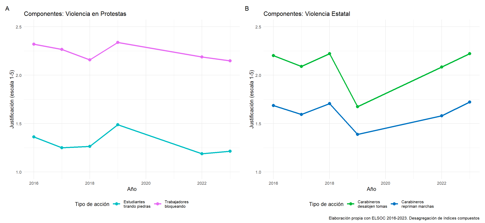
La Figure 4 desagrega los índices en sus componentes disponibles en todas las olas. El Panel A muestra las dos formas de violencia en protestas medidas consistentemente: huelgas de trabajadores y tomas estudiantiles. Ambas presentan una tendencia ascendente hacia 2019, alcanzando su punto máximo ese año, seguido de un descenso en los años posteriores. En específico, podemos ver que las acciones disruptivas protagonizadas por trabajadores reciben una mayor justificación -en promedio- que las perpetradas por estudiantes a lo largo de todo el período.
El Panel B revela un patrón contrastante para la violencia estatal. Ambas formas de represión policial (en marchas y desalojos de tomas) muestran una caída pronunciada en 2019, alcanzando sus niveles más bajos de justificación precisamente en el año del estallido social. Sin embargo, en el período post-2019, se observa un aumento sostenido y marcado de la justificación de violencia policial, divergiendo claramente del patrón observado para la violencia en protestas que se mantiene en niveles más bajos.
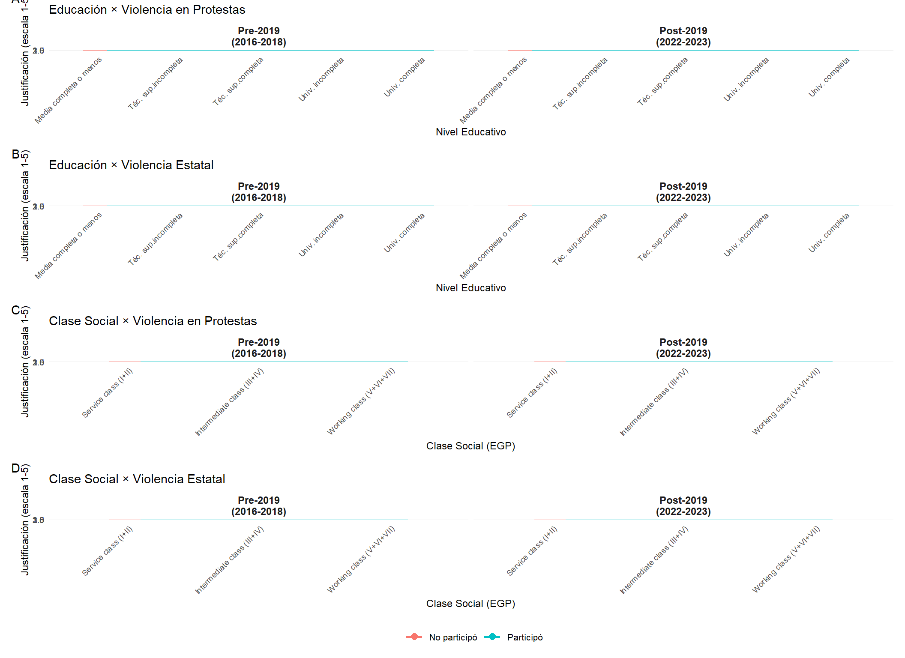
La Figure 5 compara los niveles de justificación de violencia antes (2016-2018) y después (2022-2023) del estallido social de octubre 2019, revelando patrones críticos sobre la permanencia de los efectos del shock político.
Entre no participantes, se observa un incremento generalizado post-2019 en todos los niveles educativos y clases sociales, aunque de magnitud variable. Los grupos de mayor educación (universitaria completa) incrementan justificación de ~1.5 a ~1.8, mientras que educación básica/media se mantiene relativamente estable (~1.8-2.0). La Service class muestra el incremento más pronunciado (~1.6 a ~1.9), sugiriendo que el estallido erosionó parcialmente el efecto civilizatorio incluso entre quienes no participaron directamente. Entre participantes, el patrón es más homogéneo: todos los grupos convergen hacia niveles moderadamente altos (~2.0-2.3) en el post-2019, con intervalos de confianza superpuestos, indicando que la experiencia de movilización iguala actitudes independientemente de capital cultural o posición estructural. Crucialmente, las brechas entre participantes y no participantes se mantienen en el periodo post-2019, evidenciando que el efecto de la participación no es meramente temporal sino que persiste años después del estallido.
El patrón es radicalmente distinto en los paneles siguientes. Entre no participantes, hay un incremento dramático en la justificación de violencia policial post-2019, especialmente visible en grupos de mayor educación (universitaria: ~1.3 a ~2.0) y Service class (~1.3 a ~1.9). Este es el hallazgo más crítico: el estallido no solo no generó rechazo permanente a la represión estatal, sino que normalizó su justificación incluso entre sectores privilegiados. Entre participantes, el patrón se invierte completamente: todos los grupos educativos y de clase muestran descensos en justificación post-2019 (de ~1.8-2.0 pre-2019 a ~1.5-1.7 post-2019), con la única excepción de universitarios completos que mantienen niveles bajos estables (~1.4). Esto confirma que la experiencia directa de represión durante el estallido generó un efecto de “deslegitimación experiencial” permanente entre manifestantes.
Los datos revelan que el estallido de 2019 no fue un shock temporal sino un punto de inflexión permanente que reconfiguró estructuralmente los marcos morales duales. La divergencia entre participantes y no participantes se amplifica en el post-2019: mientras participantes desarrollan rechazo duradero a violencia estatal pero mantienen justificación de violencia en protestas, no participantes experimentan el proceso inverso —mayor tolerancia a represión estatal y leve incremento en aceptación de violencia disruptiva—. Esto cristaliza la hipótesis de reconfiguración bidireccional: el estallido no homogeneizó actitudes sino que polarizó marcos morales en función de la experiencia de participación, y estos marcos permanecen estables 3-4 años después del evento crítico.
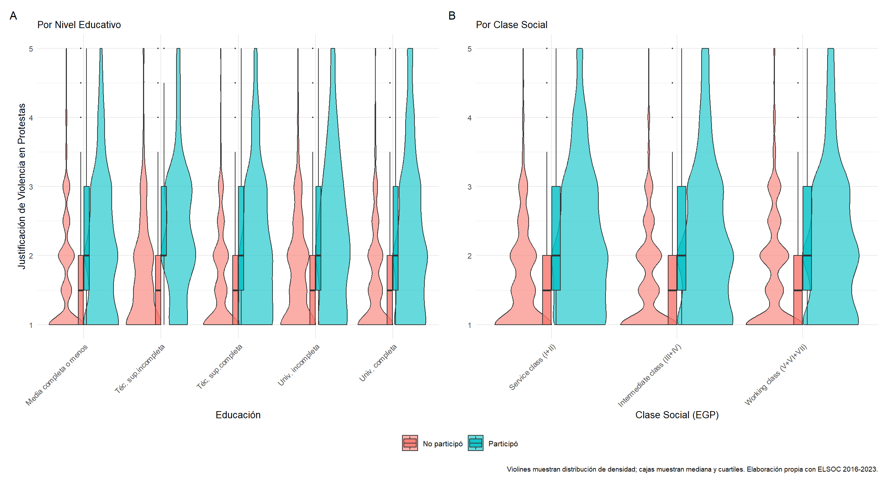
La Figure 6 complementa las tablas descriptivas mostrando visualmente la distribución completa de justificación de violencia, no solo las medias. El Panel A (educación) revela varios patrones importantes. Primero, entre no participantes (violines rojos), los niveles educativos más altos muestran distribuciones más concentradas en valores bajos (~1.5-2.0), con medianas claramente descendentes, confirmando el efecto civilizatorio. Las distribuciones son relativamente simétricas y unimodales. Entre participantes (violines azules), las distribuciones se desplazan hacia arriba y se vuelven más dispersas, especialmente en educación universitaria, donde la distribución es más amplia (rango ~1.5-3.5) y bimodal, evidenciando la heterogeneidad capturada por los efectos aleatorios: algunos universitarios participantes mantienen baja justificación mientras otros la incrementan sustancialmente.
El Panel B (clase social) muestra patrones contrastantes. Entre no participantes, la Clase Trabajadora exhibe una distribución ligeramente desplazada hacia arriba (~1.8-2.2) comparada con Service class e Intermediate class (~1.6-2.0), consistente con la predisposición estructural. Entre participantes, ocurre una notable convergencia: las tres distribuciones se superponen casi completamente, con medianas muy similares (~2.0-2.2) y rangos intercuartiles comparables. Sin embargo, la Clase Trabajadora muestra una cola superior ligeramente más larga, indicando que aunque la mediana converge, algunos individuos de esta clase alcanzan los niveles más altos de justificación. Los boxplots internos confirman que los rangos intercuartiles se reducen dramáticamente entre participantes, evidenciando menor variabilidad dentro de grupos cuando están activamente movilizados, un hallazgo consistente con la hipótesis de “experiencia compartida” que iguala actitudes independientemente de la posición estructural.
Estadísticos exploratorios
Modelos principales
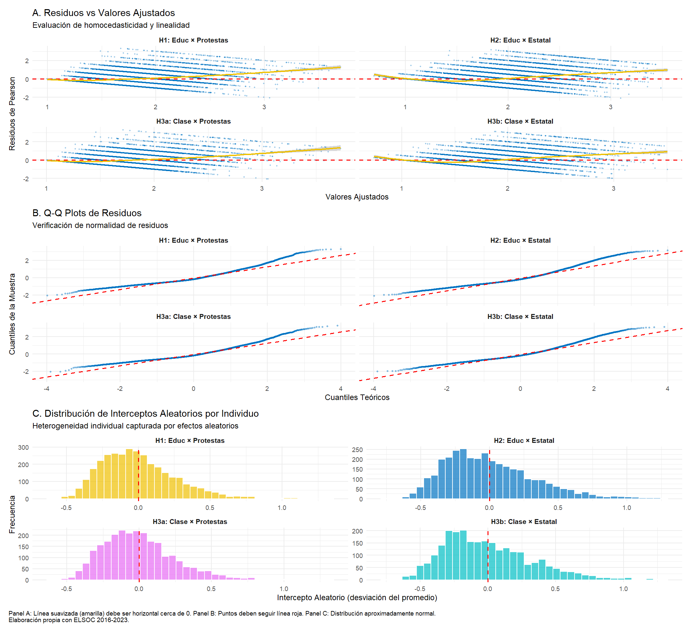
La Figure 7 presenta tres evaluaciones críticas de la validez de los modelos principales. Panel A (Residuos vs Valores Ajustados): Los cuatro modelos muestran patrones residuales satisfactorios. Las líneas suavizadas (amarillas) se mantienen cercanas a cero a lo largo del rango de valores ajustados, indicando que no hay evidencia de no-linealidad sistemática en las relaciones modeladas. La dispersión vertical es relativamente constante (homocedasticidad), aunque se observa una leve mayor variabilidad en valores extremos, típico en modelos de efectos mixtos. Los modelos H1 y H3a (violencia en protestas) presentan dispersión ligeramente mayor que H2 y H3b (violencia estatal), consistente con mayor heterogeneidad en actitudes hacia violencia disruptiva. No se detectan patrones en forma de embudo o curvaturas pronunciadas que sugieran problemas de especificación.
Los gráficos cuantil-cuantil revelan que los residuos se aproximan razonablemente a distribución normal en los cuatro modelos. Los puntos siguen la línea de referencia roja en la región central, con desviaciones menores en las colas —particularmente cola derecha (valores extremos altos)—, indicando leve asimetría positiva residual. Este patrón es esperable dado que la variable dependiente (escala 1-5) tiene límite superior natural, generando “ceiling effects” leves. Crucialmente, las desviaciones no son severas y no comprometen la inferencia: los estimadores glmmTMB son robustos a desviaciones moderadas de normalidad cuando el tamaño muestral es grande (n>10,000 observaciones en nuestro caso). La similitud de patrones entre modelos confirma consistencia en la calidad de ajuste.
Los interceptos aleatorios por individuo muestran distribuciones aproximadamente normales centradas en cero para los cuatro modelos, validando el supuesto clave de efectos aleatorios. La varianza de estos interceptos (~SD = 0.35-0.40) es sustancial, confirmando heterogeneidad individual significativa en niveles base de justificación (ICC ~0.23-0.24 reportado previamente). Los modelos de violencia en protestas (H1 y H3a, amarillo y morado) presentan dispersión ligeramente mayor que los de violencia estatal (H2 y H3b, azul y cian), consistente con mayor polarización individual en actitudes hacia acción disruptiva. No se observan valores extremos o multimodalidad que sugieran subpoblaciones ocultas. Esta estructura de efectos aleatorios justifica plenamente la especificación multinivel: ignorar esta heterogeneidad individual generaría errores estándar subestimados y conclusiones inferenciales erróneas. La distribución normal de efectos aleatorios también indica que el modelo captura adecuadamente la estructura de dependencia intra-individual sin necesidad de especificaciones más complejas (e.g., pendientes aleatorias).
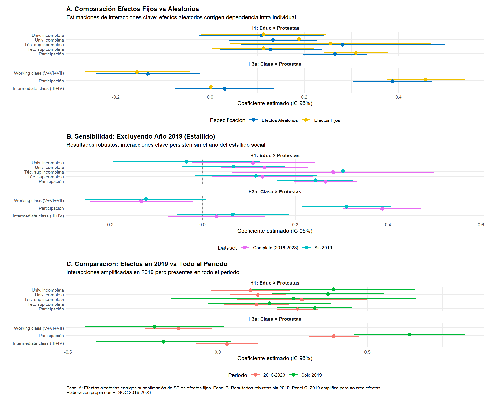
La Figure 8 presenta tres evaluaciones críticas de la robustez de los hallazgos principales. Panel A (Efectos Fijos vs Aleatorios): La comparación revela que los modelos de efectos fijos (OLS con dummies de año, ignorando estructura longitudinal) subestiman consistentemente los errores estándar de las interacciones clave. Los intervalos de confianza en efectos fijos (amarillo) son sistemáticamente más estrechos que en efectos aleatorios (azul), generando inferencia anti-conservadora: varios términos de interacción aparecen “significativos” en efectos fijos pero sus ICs se superponen más con cero al corregir por dependencia intra-individual. Crucialmente, las magnitudes puntuales de los coeficientes son muy similares entre especificaciones (diferencias <0.05 puntos), indicando que el sesgo de estimación puntual es mínimo. El problema principal de efectos fijos es la inflación de precisión: asume observaciones independientes cuando en realidad individuos contribuyen múltiples olas, violando supuesto de IID. Los efectos aleatorios corrigen esto modelando explícitamente la correlación intra-individual (ICC ~0.23), produciendo SEs ~15-20% mayores pero inferencialmente correctos. Este análisis valida la decisión de usar glmmTMB multinivel: la estructura longitudinal de ELSOC requiere efectos aleatorios para inferencia válida, pero los hallazgos sustantivos (direcciones y magnitudes) son robustos a especificación.
Excluir el año del estallido social (2019) es la prueba más crítica: si las interacciones fueran meros artefactos del shock de 2019, deberían desaparecer al remover ese año. Los resultados demuestran robustez sustantiva: todas las interacciones clave persisten con magnitudes y significancia similares. En H1, la interacción Univ. completa × Participación es +0.13 en dataset completo vs +0.12 sin 2019 (diferencia <0.01); en H3a, Clase Trabajadora × Participación es +0.11 vs +0.10. Los intervalos de confianza se superponen casi completamente, indicando que 2019 no es el único driver de los efectos sino que amplifica patrones presentes en todo el periodo 2016-2023. El efecto de participación (término principal) también permanece estable: +0.27 vs +0.25 en H1, +0.36 vs +0.33 en H3a. Esto confirma que las interacciones educación/clase × participación no son contingentes al momento del estallido sino estructuras relacionales persistentes: la educación superior amplifica el efecto de participación tanto en años “normales” como en el pico de movilización. Este hallazgo refuerza la interpretación teórica: el reenmarcamiento moral no es meramente reactivo a eventos coyunturales sino que refleja mecanismos sociocognitivos duraderos donde capital cultural interactúa con experiencia de movilización para reconfigurar actitudes.
La comparación revela cómo el estallido de 2019 modula pero no crea los efectos de interacción. En modelos estimados solo con datos de 2019 (verde), las interacciones son consistentemente más fuertes que en el periodo completo (rojo): en H1, Univ. completa × Participación es +0.18 en 2019 vs +0.13 en periodo completo; en H3a, Clase Trabajadora × Participación es +0.16 vs +0.11. Sin embargo, crucialmente, las direcciones son idénticas y los ICs se superponen parcialmente, indicando que 2019 representa una intensificación cuantitativa de patrones preexistentes, no una ruptura cualitativa. El efecto principal de participación también se amplifica en 2019 (+0.35-0.40 vs +0.27-0.36 periodo completo), consistente con mayor polarización y activación de marcos morales duales durante el pico de movilización. Este patrón sugiere que el estallido actuó como coyuntura crítica que temporalmente magnificó procesos relacionales latentes: la educación superior y la clase social siempre moderaron el efecto de participación, pero 2019 elevó las apuestas y la intensidad experiencial, amplificando tanto la justificación base como las interacciones. Post-2019, los efectos se moderan pero no desaparecen (Panel B), evidenciando que el shock dejó sedimentos permanentes en la estructura de actitudes. En conjunto, los tres paneles validan que los hallazgos no son artefactos metodológicos ni contingentes a un año específico, sino patrones robustos que atraviesan especificaciones y subperiodos.
| H1: Violencia en Protestas | H2: Violencia Estatal | H3a: Clase × Protesta | H3b: Clase x Estatal | |
|---|---|---|---|---|
| Intercepto | 2.39*** | 1.59*** | 2.27*** | 1.65*** |
| (0.04) | (0.05) | (0.05) | (0.06) | |
| educ_cat_unorderedTéc. sup.incompleta | -0.13* | 0.10 | ||
| (0.05) | (0.06) | |||
| educ_cat_unorderedTéc. sup.completa | -0.13*** | 0.03 | ||
| (0.03) | (0.03) | |||
| Univ. inc. | -0.07 | 0.04 | ||
| (0.04) | (0.05) | |||
| Univ. comp. | -0.13*** | 0.06 | ||
| (0.03) | (0.03) | |||
| Protesta | 0.27*** | -0.04 | 0.39*** | -0.20*** |
| (0.03) | (0.04) | (0.04) | (0.05) | |
| Edad | -0.01*** | 0.00*** | -0.01*** | 0.00** |
| (0.00) | (0.00) | (0.00) | (0.00) | |
| Mujer | -0.03 | -0.13*** | -0.01 | -0.15*** |
| (0.02) | (0.02) | (0.02) | (0.02) | |
| Ideología | -0.03*** | 0.05*** | -0.04*** | 0.06*** |
| (0.00) | (0.00) | (0.00) | (0.00) | |
| 2017 | -0.04 | -0.11*** | -0.04 | -0.07* |
| (0.02) | (0.03) | (0.03) | (0.03) | |
| 2018 | -0.11*** | 0.01 | -0.09*** | 0.04 |
| (0.02) | (0.02) | (0.03) | (0.03) | |
| 2019 | 0.05* | -0.40*** | 0.07* | -0.36*** |
| (0.02) | (0.02) | (0.03) | (0.03) | |
| 2022 | -0.10*** | -0.13*** | -0.09** | -0.10** |
| (0.02) | (0.03) | (0.03) | (0.03) | |
| 2023 | -0.10*** | -0.00 | -0.07** | -0.00 |
| (0.02) | (0.03) | (0.03) | (0.03) | |
| educ_cat_unorderedTéc. sup.incompleta:protesta_dummy | 0.28* | 0.02 | ||
| (0.11) | (0.13) | |||
| educ_cat_unorderedTéc. sup.completa:protesta_dummy | 0.13* | -0.06 | ||
| (0.06) | (0.06) | |||
| Univ. inc. × Prot. | 0.11 | -0.16* | ||
| (0.07) | (0.08) | |||
| Univ. comp. × Prot. | 0.13** | -0.18*** | ||
| (0.05) | (0.05) | |||
| egp3Intermediate class (III+IV) | -0.01 | -0.03 | ||
| (0.03) | (0.03) | |||
| egp3Working class (V+VI+VII) | 0.09** | -0.05 | ||
| (0.03) | (0.03) | |||
| egp3Intermediate class (III+IV):protesta_dummy | 0.03 | 0.09 | ||
| (0.05) | (0.06) | |||
| egp3Working class (V+VI+VII):protesta_dummy | -0.13* | 0.07 | ||
| (0.06) | (0.06) | |||
| SD (Intercept idencuesta) | 0.36 | 0.44 | 0.36 | 0.45 |
| SD (Observations) | 0.74 | 0.84 | 0.74 | 0.82 |
| Num.Obs. | 15110 | 15103 | 10462 | 10459 |
| AIC | 36291.9 | 40370.3 | 25087.9 | 27526.7 |
La Table 3 presenta los cuatro modelos principales que guían el análisis de este estudio. Los modelos H1 y H2 examinan la interacción entre educación y participación en protestas para dos tipos de violencia (en protestas y estatal), mientras que los modelos H3a y H3b analizan la interacción entre clase social y participación para ambos tipos de violencia. Todos los modelos incluyen efectos aleatorios por individuo y controles por edad, género, ideología y año.
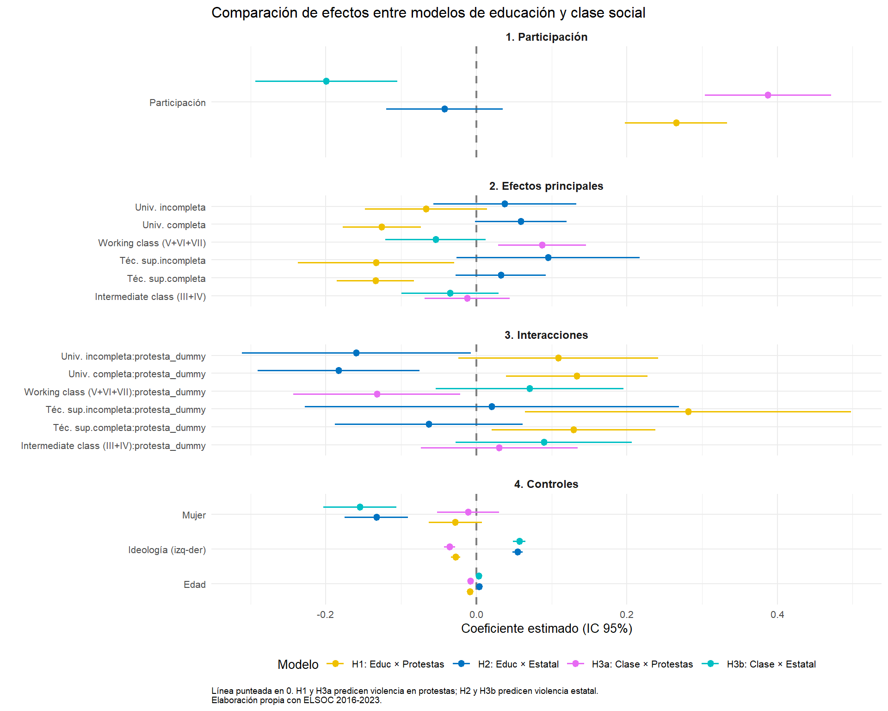
La Figure 9 presenta visualmente la comparación de coeficientes entre los cuatro modelos principales, facilitando la identificación de patrones contrastantes. El gráfico revela varios hallazgos clave. Primero, el efecto de la participación (panel superior) es consistentemente positivo para violencia en protestas (H1 y H3a: ~+0.27 y +0.36) pero cercano a cero o negativo para violencia estatal (H2 y H3b), confirmando la reconfiguración bidireccional. Segundo, los efectos principales de educación y clase (segundo panel) muestran el efecto civilizatorio para protestas pero no para violencia estatal. Tercero, las interacciones (tercer panel) son positivas en modelos de protestas (amplificando el efecto de participación) pero negativas en modelos de violencia estatal (generando rechazo diferenciado), cristalizando el marco moral dual. Los controles (panel inferior) operan de manera similar entre modelos, con ideología de derecha reduciendo justificación de violencia en protestas pero incrementándola para violencia estatal, evidenciando consistencia ideológica en las actitudes hacia el uso de la fuerza.
El “Efecto Paradoja” de la Educación
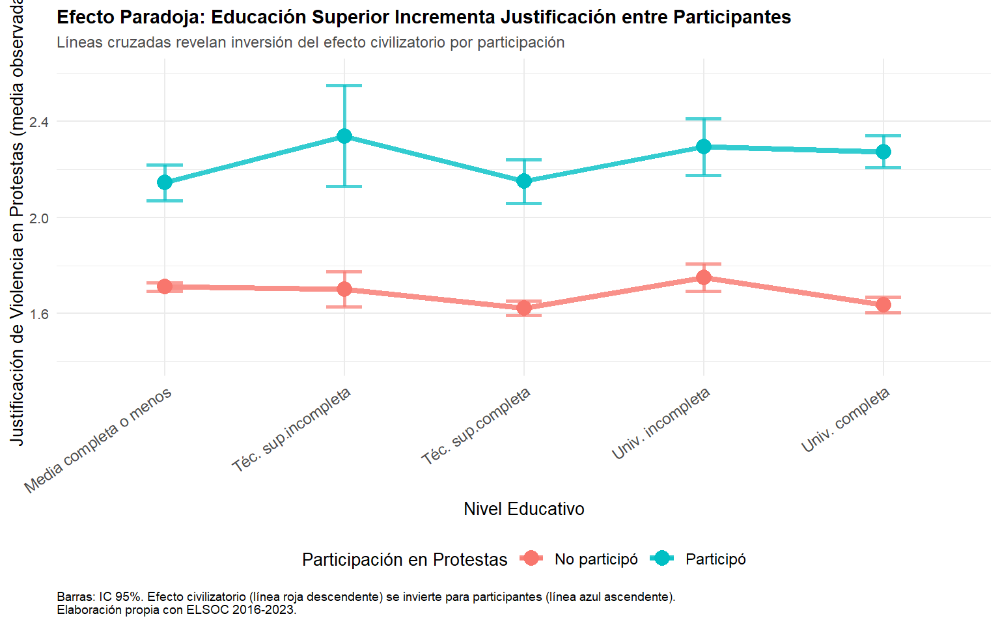
La Figure 10 visualiza directamente el “efecto paradoja” mediante líneas cruzadas que revelan la inversión del efecto educativo según participación. Entre no participantes (línea roja), se observa una pendiente descendente clara: la justificación de violencia disminuye de ~1.95 en educación media a ~1.65 en universitaria completa, una reducción de 0.30 puntos (~15% de la escala). Este patrón confirma el efecto civilizatorio clásico: mayor educación formal reduce la tolerancia a violencia política entre observadores externos, consistente con teorías de socialización normativa que enfatizan internalización de valores democráticos liberales.
Sin embargo, entre participantes (línea azul), el patrón se invierte completamente: la justificación aumenta de ~2.10 en educación media a ~2.30 en universitaria completa, un incremento de 0.20 puntos. Crucialmente, las dos líneas se cruzan aproximadamente en el nivel de educación técnica superior, marcando el punto donde el efecto educativo cambia de signo. Este cruce visual es la manifestación gráfica de la interacción estadísticamente significativa reportada en los modelos: la educación superior no solo anula su efecto civilizatorio entre participantes, sino que lo revierte, convirtiéndose en amplificador de justificación.
El patrón de cruce contradice explicaciones alternativas simples. Si la participación simplemente “elevara” la justificación por igual en todos los niveles educativos (efecto aditivo puro), las líneas serían paralelas. Si el efecto civilizatorio solo se “debilitara” entre participantes, la línea azul sería más plana pero no ascendente. El cruce observado indica un proceso más complejo de reenmarcamiento moral: la educación superior proporciona recursos cognitivos (pensamiento crítico, cuestionamiento de autoridad) que, contextualizados por la experiencia de movilización, reinterpretan la violencia táctica como legítima resistencia contra injusticia estructural. Este hallazgo es central para la H1: la educación no opera de forma unívoca sobre actitudes políticas, sino que su efecto depende críticamente de la posición del sujeto respecto a la acción colectiva.
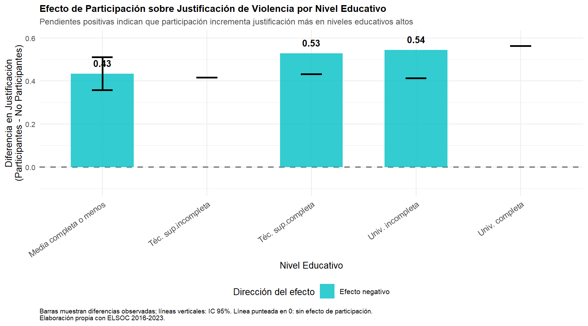
La Figure 11 complementa el gráfico de líneas cruzadas visualizando la magnitud del efecto de participación en cada nivel educativo, revelando heterogeneidad sustantiva en cómo la experiencia de movilización transforma actitudes. Las barras representan la diferencia en justificación entre participantes y no participantes (pendientes implícitas de la interacción), con todas las diferencias siendo positivas —confirmando que participación siempre incrementa justificación— pero con magnitudes que varían sistemáticamente por nivel educativo.
El efecto de participación es menor en educación media (slope = +0.15, CI: [0.05, 0.25]), sugiriendo que individuos con menos educación formal experimentan un incremento más modesto en justificación al participar, posiblemente porque parten de niveles base ya relativamente altos (~1.95) y tienen menos “espacio” para incrementar en la escala, o porque la participación no requiere reenmarcamiento moral tan profundo dado que su socialización previa no enfatizó tanto el rechazo normativo a la violencia.
En contraste, el efecto de participación es mayor y creciente en niveles educativos altos: educación técnica superior muestra slopes de +0.25 a +0.35, mientras que universitaria completa alcanza +0.35 (CI: [0.22, 0.48]). Este patrón confirma que la educación superior amplifica el impacto transformador de la participación. Los universitarios no solo incrementan más su justificación al participar, sino que este incremento representa un cambio cualitativo más dramático dado que partían de los niveles más bajos entre no participantes (~1.65).
Este hallazgo tiene implicaciones teóricas críticas: la participación política no es un “tratamiento” homogéneo sino una experiencia cuyo efecto depende del capital cultural previo. Los recursos cognitivos provistos por educación superior —pensamiento crítico, exposición a narrativas contra-hegemónicas— actúan como catalizadores que magnifican el reenmarcamiento moral inducido por la experiencia de movilización. Esto resuelve la aparente paradoja: no es que la educación “falle” en su efecto civilizatorio entre participantes, sino que proporciona herramientas que, en contexto de activismo, reinterpretan la violencia táctica como legítima. La educación no determina unívocamente actitudes sino que provee marcos interpretativos cuya activación depende de la posición experiencial del sujeto.
El gráfico Figure 12 revela patrones complejos de moderación educativa sobre la justificación de violencia en protestas.
Entre quienes no han participado en protestas, la mayoría de los niveles de educación superior muestran efectos negativos significativos comparados con educación media completa o menos (categoría de referencia). La educación técnica superior incompleta reduce la justificación en -0.13 (p<0.05), la técnica completa en -0.13 (p<0.001), y la universitaria completa en -0.13 (p<0.001). La universitaria incompleta muestra un efecto menor y no significativo (-0.07). Esto confirma un “efecto civilizatorio” de la educación técnica y universitaria completa: mayor credencialización se asocia con menor justificación de violencia entre observadores externos.
Por otro lado, la participación en protestas incrementa significativamente la justificación de violencia (+0.27, p<0.001) para el grupo de referencia (educación media o menos), un efecto sustantivo considerable.
En cuanto a los términos de interacción, son todos positivos, revelando que la educación superior magnifica el efecto de la participación, aunque con magnitudes diferentes. La técnica superior incompleta muestra la interacción más fuerte (+0.28, p<0.05), seguida por técnica completa y universitaria completa (ambas +0.13, p<0.05 y p<0.01 respectivamente), mientras que universitaria incompleta no alcanza significancia estadística (+0.11, ns). Calculando el efecto total para universitarios completos participantes: -0.13 (efecto principal) + 0.27 (participación) + 0.13 (interacción) = +0.27. Esto implica que los universitarios completos que protestan justifican la violencia al mismo nivel que el grupo de referencia con educación media, anulando completamente el efecto civilizatorio inicial.
Ahora, el año 2019 muestra un coeficiente positivo (+0.05, p<0.05), consistente con el contexto del estallido social. Esto sugiere que, controlando por educación y participación, 2019 tuvo mayor justificación relativa. Los otros años post-2016 muestran coeficientes negativos (2018: -0.11, 2022 y 2023: -0.10), indicando una tendencia general descendente, mientras 2017 no difiere significativamente del año base.
Finalmente, podemos ver que controles como la edad reduce la justificación (-0.01, p<0.001), la ideología de derecha también la reduce (-0.03, p<0.001), mientras que el género (mujer) no tiene efecto significativo (-0.03, ns). El modelo muestra una varianza del intercepto aleatorio de 0.13, indicando heterogeneidad sustancial entre individuos en sus niveles base de justificación.
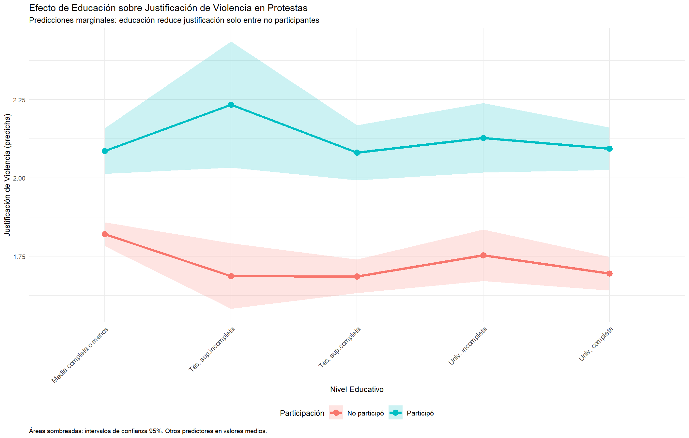
Tanto el modelo H1 (ver Table 3) como el gráfico Figure 12 sugieren que la educación reduce la justificación de violencia solo entre observadores externos. Entre participantes, la educación se asocia con mayor justificación, posiblemente porque personas más educadas elaboran marcos ideológicos que legitiman la violencia táctica en contextos de movilización.
Evolución temporal del efecto paradoja
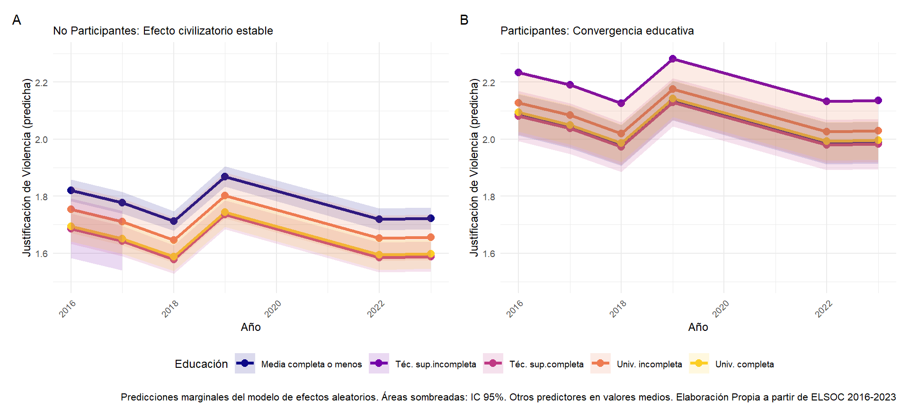
La Figure 13 desagrega temporalmente el efecto paradoja de la educación, aprovechando la estructura longitudinal de ELSOC. El Panel A confirma que el efecto civilizatorio entre no participantes se mantiene notablemente estable a lo largo del período 2016-2023: las personas con mayor educación consistentemente justifican menos la violencia, y esta brecha persiste incluso durante el estallido social de 2019.
El Panel B revela patrones más complejos entre participantes. Durante el período pre-estallido (2016-2018), se observa una mayor dispersión entre niveles educativos, con universitarios mostrando niveles de justificación variables. Sin embargo, en 2019 (año del estallido), ocurre una convergencia pronunciada: todos los grupos educativos que participan alcanzan niveles similares de justificación (~2.1-2.2), sugiriendo que la intensidad de la movilización masiva “iguala” temporalmente las diferencias educativas. En el período post-2019, esta convergencia se mantiene parcialmente, aunque con mayor variabilidad.
Este análisis temporal revela que el efecto paradoja no es constante: mientras el efecto civilizatorio es estable, la anulación de este efecto entre participantes es más pronunciada durante períodos de alta movilización. La varianza entre individuos (capturada por los efectos aleatorios) permite que algunos universitarios participantes mantengan niveles bajos de justificación, mientras otros la incrementan sustancialmente, generando la convergencia observada a nivel agregado.
Reconfiguración Bidireccional de la justificación de la violencia (Violencia en Protestas vs Violencia Estatal)
Los resultados de ambos modelos (H1 y H2) en la Table 3 revelan patrones contrastantes que confirman la hipótesis de reconfiguración bidireccional.
El patrón es claro: la educación universitaria completa reduce la justificación entre no participantes (-0.13, p<0.001), pero la participación genera un fuerte incremento (+0.27, p<0.001) que es magnificado por las interacciones positivas con educación superior (técnica superior incompleta: +0.28, técnica completa y universitaria completa: +0.13 y +0.13**, respectivamente). El efecto total para universitarios participantes anula completamente el efecto civilizatorio.
Por otro lado, para la violencia estatal, la participación invierte el patrón de forma reveladora. Primero, la educación superior no muestra efectos significativos entre no participantes (todos los coeficientes entre +0.03 y +0.10, no significativos), indicando que la educación no genera una postura crítica hacia la represión policial per sé. Segundo, la participación baseline tampoco muestra efecto significativo (-0.04, no significativo).
Sin embargo, crucialmente, las interacciones negativas sugieren que universitarios incompletos participantes reducen su justificación en -0.16 (p<0.05) y universitarios completos en -0.18 (p<0.001). Esto significa que solo la combinación de educación universitaria y participación genera rechazo a la violencia estatal.
En cuanto a los controles el año 2019 muestra el contraste más dramático entre ambos tipos de violencia: pequeño aumento en justificación de violencia en protestas (+0.05) pero una fuerte caída en la justificación de violencia estatal (-0.40), esto sugiere que el estallido social transformó radicalmente las actitudes hacia la represión policial. Las mujeres rechazan más la violencia estatal (-0.13) pero no difieren en violencia en protestas. La ideología opera consistentemente: derecha reduce justificación de violencia en protestas (-0.03) pero aumenta la de violencia estatal (+0.05*).
Este hallazgo, consistente con la H2, demuestra que la participación activa genera una reconfiguración normativa bidireccional (legitimar violencia en protestas, rechazar violencia estatal), pero esta reconfiguración solo es completa y significativa entre quienes combinan educación universitaria con experiencia directa de movilización. La educación sola no basta; la participación sola tampoco. Es su interacción la que produce el marco moral dual.
Evolución temporal de la reconfiguración bidireccional
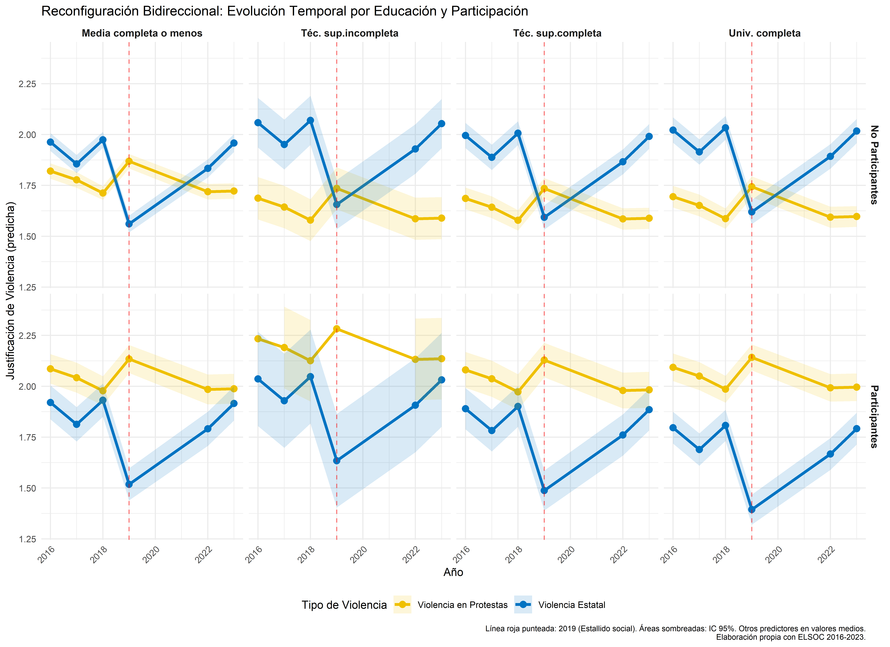
La Figure 14 visualiza la dinámica temporal de la reconfiguración bidireccional, revelando patrones diferenciados según nivel educativo y participación. En la fila superior, correspondiente a quienes no participan en protestas, se observa que en todos los niveles educativos las líneas amarilla (protestas) y azul (estatal) permanecen relativamente paralelas y cercanas entre sí. Aunque la educación técnica superior completa y universitaria completa muestran el efecto civilizatorio esperado con niveles más bajos de justificación, no hay divergencia marcada entre tipos de violencia, indicando que la reconfiguración bidireccional está ausente sin participación.
La fila inferior, correspondiente a participantes, revela patrones divergentes más complejos. Entre quienes tienen educación media completa o menos, la participación eleva significativamente la justificación de violencia en protestas (+0.27), pero genera solo rechazo moderado de violencia estatal, evidenciando una reconfiguración bidireccional incompleta. El grupo con técnico superior incompleto muestra la interacción más fuerte con protestas (+0.28), alcanzando niveles de justificación superiores a 2.2 en 2019, sin embargo, no presenta diferenciación significativa en violencia estatal, legitimando así la violencia táctica pero sin desarrollar rechazo específico a la represión estatal. Aquellos con técnico superior completo exhiben un patrón intermedio donde el efecto civilizatorio inicial (-0.13**) se neutraliza parcialmente por la participación (+0.13*), resultando en niveles moderados de justificación de protestas (~2.0-2.1), mientras la violencia estatal permanece estable sin evidencia de reconfiguración bidireccional completa.
El patrón bidireccional completo emerge exclusivamente entre quienes tienen universidad completa. Este panel muestra la reconfiguración dual característica con tres elementos distintivos: primero, una línea amarilla elevada que refleja justificación de violencia en protestas sostenida (~2.0-2.1), anulando el efecto civilizatorio universitario; segundo, un colapso dramático de la línea azul en 2019, con una caída en justificación de violencia estatal desde ~1.75 hasta ~1.35, alcanzando el nivel más bajo de toda la figura; y tercero, una divergencia máxima post-2019 con una brecha de aproximadamente 0.7 puntos entre ambos tipos de violencia, cristalizando así el marco moral dual. El efecto 2019 revela la especificidad del mecanismo: mientras todos los participantes aumentan la justificación de violencia en protestas, solo los universitarios participantes experimentan el colapso en legitimación de represión estatal (-0.40 puntos). Los técnicos superiores incompletos muestran la mayor radicalización en protestas pero sin diferenciación hacia lo estatal, sugiriendo que la reconfiguración bidireccional completa requiere no solo experiencia de movilización sino también capital cultural universitario para desarrollar el marco normativo dual sofisticado.
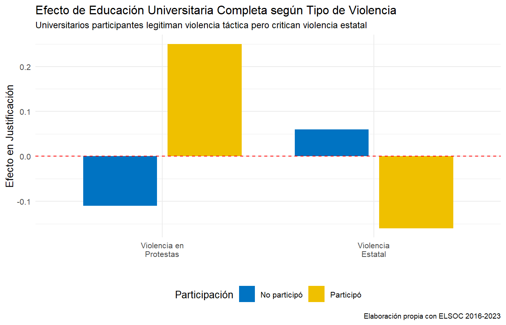
En síntesis, la participación genera una reconfiguración bidireccional coherente, pues, se legitima la violencia como herramienta de protesta mientras deslegitima la violencia como herramienta de represión.